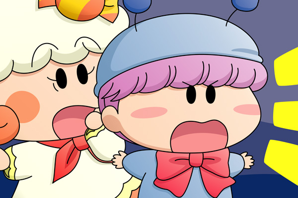

ムルモ「はっ、ついぐっすり眠ってしまったでしゅ」
クモモペンションでの生活も、いよいよ３日目の朝を迎えました。
すでにリビングの窓からはまぶしい朝日の光が差し込んでいます。
ムルモは布団からがばっと起き上がり、きょろきょろと辺りを見回しました。
何人かの妖精はまだぐっすり眠っていて、また何人かの妖精はすでに布団からいなくなっているのが分かりました。
ミルモ「ぐお～、ぐお～」
リルム「すぴー、すぴー」
アクミ「んご～、んご～」
ムルモ「お兄たまたちはよく眠っていましゅね・・・」
パンタ「あ、ムルモお兄ちゃんが起きたですっち～。
ボクたん、今日は早く起きてミルモお兄ちゃんと一緒に
遊ぶ約束をしていたですっちのに・・・」
ムルモ「パンタしゃんは、ヤマネしゃんやクモモしゃんはどこへ行ったか
知ってましゅか？」
パンタ「確かヤマネお姉ちゃんたちは忍術修行をしてくると言って
だいぶ前に出かけたですっちよ。
クモモさんは朝ご飯のしたくをしているみたいですっち。
だいぶ前から食卓の方から甘い匂いが伝わってきていて、
ボクたんもうお腹ぺこぺこなんですっち～」
パンタの言うとおり、食卓の方からお菓子の甘い匂いが漂ってきていて、ムルモも思わず目をとろんとさせました。
昨晩はクモモの指示に従ったおかげで、事件らしい事件は何も起きなかったようでした。
しばらくすると、玄関の方でドアの開く音がしました。
サスケ「兄貴の修行よりヤマネの修行の方が断然ハードだぜ～」
ハンゾー「ボクもお腹がぺこぺこで目が回りそうなのら～」
ヤマネ「はい、私もハンゾー先輩と同じくお腹がすきましたでございます」
サスケ「あれ？ミルモたちまだ寝てるんだぜ！」
ハンゾー「だらしないのら～」
さらに食卓の方からクモモの声が聞こえました。
クモモ「皆さ～ん、朝ご飯ができたクモよ～～」
リルム「はっ、わたくしったらつい寝坊してしまいましたわ。
ミルモ様！アクミさんもそろそろ起きてくださいませ！」
＊
朝ご飯も食べ終わり、ヤシチ、パピィ、アロマの３人を除くみんなはリビングに集まって、くつろぎながらそれぞれおしゃべりを楽しんでいました。
クモモ「間もなくクモモペンションを出発する時間クモね」
ミルモ「そういやヤシチたちはどうすんだ？」
リルム「そろそろ起きても良さそうな気もするのですが・・・」
ヤマネ「私もヤシチ兄様を置いて先に帰れませぬ・・・」
アクミ「あたいもアロマと一緒じゃないと帰らないよ」
パンタ「パピィお姉ちゃんも心配ですっち」
ミルモ「そう言えばパピィの奴はまだ眠っているのか？
おいムルモ、ちょっと様子見てこいよ・・・」
ムルモ「ぼ、ボク一人ででしゅか・・・？」
ヤマネ「私もご一緒するでございます」
サスケ「ヤマネが行くならオイラも行くぜ」
ハンゾー「ボクも行くのら～」
クモモ「いいえ、私がもう一度起こしに行ってくるクモ。
皆さんは先に船に乗って待っていて欲しいクモ」
ミルモ「そうだな、ここはクモモにまかせるとするか・・・」
リルム「クモモさんにお任せした方が安心なのですわ」
ミルモ「んじゃオレたちは先に船に乗るとするか」
ムルモ「ほえぇ！」
ミルモ「ん？どうしたムルモ？」
ムルモ「・・・まだでしゅ・・・」
ミルモ「まだって何が？」

ムルモ「皆しゃん、事件はまだ終わってないでしゅよ！
リビングから一歩も出ないでくだしゃい！」
クモモ「ムルモさん！？」
アクミ「何だよ、犯人が分かったとでも言うのかよ？」
ムルモ「もちろんでしゅ。
どんな難事件もボクにとってはマシュマロよりも軽いもんでしゅ」
今回より解決編に突入しました。解決編と言いながらも、ムルモによる推理は文字数の都合により次回へ持ち越しです・・・ごめんなさい。次回は果たして推理小説みたいな筋道立った説明を出来るだろうか・・？全然自信はありませんががんばります。皆さんの方は今回の真犯人を特定出来ましたでしょうか？
それにしても私の描くミルモ世代の妖精は何ともだらしがないですね(笑)。逆にムルモ世代の幼妖精がしっかりし過ぎているような気もしますが、ムルモ屋本舗というムルモ主役のサイトですのでお許しを～。
(2008/10/18)